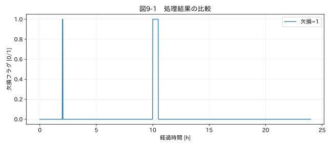

第III部 欠損値と異常値を扱う / 第09章
この章の節
欠損値の種類と発生原因
学習目標
NaN、空白、ゼロ、欠損コードの意味を分け、連続欠損を区間として記述する。欠損メカニズムの仮説を立て、データだけでは確定できないことを理解する。
9.1 空白は一種類ではない
ある試験では温度の空欄が通信切断を意味し、別の試験では運転停止中に測定しなかったことを意味する。センサーが上限を超えたときに9999を返す機器もある。「空欄を全部線でつなぐ」という操作では、原因の違いを表現できない。
本書の温度教材には短い3点欠損と長い30点欠損があり、停止を含む教材には計画的な無測定区間がある。NaN は数値列の欠損表現、None はPythonの値がない状態、pd.NA はpandasの欠損表現の一つである。表現の違いを統一することと、発生理由を統一することは別だ。
9.2 ゼロを欠損へ変えない
電流0 Aは停止中の有効な測定値かもしれない。加速度0 m/s²は振動のゼロ交差に現れる。温度0 °Cも実在する。機器仕様に「0が欠損コード」と明記されていない限り、ゼロを一括欠損化しない。逆に、欠損を0へ置き換えると、平均やRMSに強い影響が出る。
9999というコードも、列によっては有効値になり得る。欠損コードは列別・機器別に設定し、文字列の段階で分類する。NA が試験片IDに使われている場合、pandasの既定欠損解釈が識別子を消すことがある。keep_default_na=False で原文字列を守り、対象列で明示的に解釈する方法がある。R2
9.3 点の数から区間の長さへ
欠損率が同じ1%でも、10000点の中に1点ずつ100回欠ける場合と、100点連続して欠ける場合は異なる。補間可能性は、変化の速さと欠損の時間幅に依存する。欠損の開始時刻、終了時刻、欠損点数、前後の観測間隔、運転モードを一覧にする。
本章のコードは、欠損か否かが切り替わるたびにグループ番号を増やして連続区間を求める。missing.ne(missing.shift()).cumsum() はこの処理を列単位で表す。初めて見る場合は、True/Falseの列を紙に書き、前の行と違う場所に1を置いて足し合わせると理解しやすい。
9.4 MCAR・MAR・MNARを実務へ引き寄せる
欠損メカニズムは、値が観測されるかどうかが何に依存するかで考える。Rを観測されたかの指標、Yを測定値とすると、MCARは欠損が観測・未観測のデータに依存しないモデルである。MARは観測済み情報で条件付ければ未観測値への依存が残らないモデル、MNARはその条件付け後も未観測値に依存するモデルだ。
例えば、試験状態に関係なく偶発的に一部の通信パケットが落ちるならMCARの近似を考えられる。記録済みの運転モードで通信負荷が変わるなら、そのモードを条件に含めたMARを検討できる。温度が高すぎるとセンサーが応答を返さないなら、未観測の温度そのものに欠損が依存するMNARを疑う。
これらはラベルを付ければ解決する分類ではない。同じ見かけの欠損パターンが異なる原因で生じる。観測されたデータだけでMARとMNARを完全に識別することは一般にできない。機器仕様、通信ログ、再試験、他のセンサーと照合し、仮定を明示する。
関連する詳細実験は実践補講に掲載。入力形式・同期・補間・校正・多変量・チャンク境界を扱う。
実行するコードと結果
run.py · 共通処理の全ソース
教材フォルダで python examples/chapter09/run.py を実行。以下は省略のないスクリプト。共通モジュールは教材一式に含む。
from pathlib import Path
import sys
ROOT=Path(__file__).resolve().parents[2]
sys.path.insert(0,str(ROOT))
sys.path.insert(0,str(ROOT/'examples'))
import numpy as np
import pandas as pd
from common import load,truth,seconds,plot
from tsclean.core import numeric,timestamps,time_flags,hampel,freeze_candidates,interpolate_short,compare
df=load('01_temperature');missing=df['測定値'].isna()
group=missing.ne(missing.shift()).cumsum()
runs=[len(g) for _,g in missing.groupby(group) if g.iloc[0]]
print('連続欠損の長さ:',runs,'最長 [記録]:',max(runs))
print('欠損原因は値だけでは確定しない。manifestは模擬データの出題情報。')
plot(9,seconds(df)/3600,{'欠損=1':missing.astype(int)},'欠損フラグ [0/1]',xlabel='経過時間 [h]')
検証環境での実行結果を開く
連続欠損の長さ: [3, 30] 最長 [記録]: 30
欠損原因は値だけでは確定しない。manifestは模擬データの出題情報。

9.5 欠損の図を作る
図9-1は欠損点だけを1として描く。測定値の線だけでは、長い空白が白い背景へ紛れることがある。複数センサーでは、横軸を時間、縦軸をチャンネルとする欠損マップを作ると、一斉欠損か一つだけの欠損かを区別しやすい。一斉欠損なら共通電源やロガー、局所欠損なら個別配線という仮説を立てられるが、図だけで確定はしない。
欠損直前の値、傾き、運転モード、通信負荷を非欠損区間と比較することも役立つ。ただし欠損後の情報だけでリアルタイム予測器を作ると、未来の情報を使うことになる。欠損の説明と運用時の推定で使える情報を区別する。
演習
基礎演習
温度データの連続欠損長を列挙し、予定周期を使って前後の観測間隔へ換算する。
応用演習
欠損をゼロへ置換した平均値と、観測値だけの平均値を比較する。どちらも真の平均とは限らない理由を述べる。
実務演習
高温時だけ欠損が増えるが、温度の上限超過と通信負荷増大が同時に起こる。原因を調べる試験を提案する。
演習解答・解説を表示する
基礎：3点と30点。周期60秒なら、前後の有効観測を結ぶ間隔はそれぞれ240秒と1860秒。欠損点数×周期と、補間の両端間隔を区別する。
応用：ゼロ置換は未知の温度を0 °Cと仮定して平均を下げる。観測値平均も欠損が高温に集中すれば低く偏る。欠損機構の評価が必要である。
実務：通信負荷を固定して温度を変える、温度を固定して通信負荷を変える、別系統の温度計を併設するなど、原因を分離する。上限を超える値を補間で隠さない。
章末まとめ
欠損は「値がない」だけでなく、測定の仕組みに関する情報でもある。補完の前に、いつ、どの列で、どの条件下で欠けたのかを調べる。